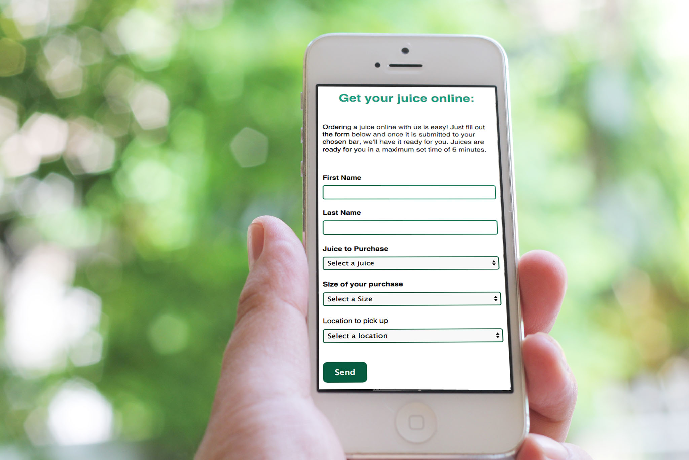

Juiced Up mobile website:
Juiced Up is a mobile website project I created from scratch with Front End HTML, CSS, SASS, JQuery and native Javascript for the form validation.
Juiced Up is my final year project for my university degree where I handled the following tasks:
- Responsive Web Design
- Photography retouching
- Front end development (HTML, CSS/SASS, JQuery, JavaScript)
- JavaScript form validation
The concept:
With hospitality services, there is a fustration with having to wait inline impatiently for your order to arrive.
This fustration can ruin the experience of waiting for your unique order in some hospitality services due to the feeling that you are not as important as others around you in the ordering que.
Juiced Up aims to help remove this feeling of anxiety and impatience by allowing users to purchase a freshly made juice smoothie or freshly squeezed juice at their own comfort zone and free from feeling like they are last in the line.
The website features:
Observing existing hospitality service websites and the lack of ordering unless physically in the store, key features were identified that could help make the process of ordering a drink easier and more enjoyable. This includes:
- Customers can be free of feeling impatient looking at long cues by ordering in their own comfort space
- Customers can find their closest store to produce their order with a visual map locating all stores
- Visual photographs of the different options to purchase rather than simple text helps to give better indication what the customer is going to recieve
- Subtle but powerful micro-animations were included in the website to increase playfulness. The micro-animations applied include back to top ctas, autoscrolling fade ins and an animated menu
Learnings:
Whilst not for a live client, over the course of this project I picked up many design and front end development techniques including:
- Responsive CSS media queries
- Micro animations with JavaScript and JQuery
- Better code management techniques with Git and Github
- Mobile first design techniques
- Google Maps API features